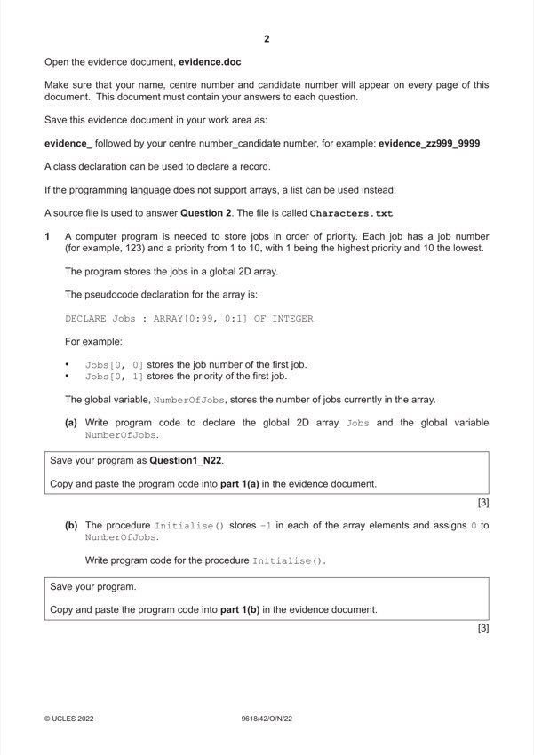

Question 1

Original paper page 2
Part 1(a) — solution
- (global) 2-D array Jobs with correct identifier (and Integer data type)
- … with 100 elements by 2 elements
- (global) NumberOfJobs declared as variable (as Integer)
Visual Basic (VB.NET)
Dim Jobs(99, 1) As Integer
Dim NumberOfJobs As Integer
2022 Page 3 of 24
9618/42 Cambridge International AS & A Level – Mark Scheme October/November
PUBLISHED 2022
Python
Jobs # global integer, 100 by 2 elements
NumberOfJobs # global integer
Mark points
- (global) 2-D array Jobs with correct identifier (and Integer data type)
- … with 100 elements by 2 elements
- (global) NumberOfJobs declared as variable (as Integer)
Part 1(b) — solution
- procedure heading (and end where appropriate) and assigns 0 to
- looping through both array element dimensions
- … assigns −1 to all elements
Visual Basic (VB.NET)
Sub Initialise()
For X = 0 To 99
For Y = 0 To 1
Jobs(X, Y) = -1
Next
Next
NumberOfJobs = 0
End Sub
2022 Page 4 of 24
9618/42 Cambridge International AS & A Level – Mark Scheme October/November
PUBLISHED 2022
Python
def Initialise():
global Jobs
global NumberOfJobs
for x in range(0, 100):
Jobs.append([-1,-1])
NumberOfJobs = 0
Mark points
- procedure heading (and end where appropriate) and assigns 0 to
- looping through both array element dimensions
- … assigns −1 to all elements
Part 1(c) — solution
- Function header (and end where appropriate) with two (integer)
- Checks if array is full …
- … if full outputs "Not added"
- Storing parameters job number and priority to only the next available
- Incrementing NumberOfJobs
- Outputting "Added" if successful
Visual Basic (VB.NET)
Sub AddJob(JobNumber, Priority)
If NumberOfJobs = 100 Then
Console.WriteLine("Not added")
Else
Jobs(NumberOfJobs, 0) = JobNumber
Jobs(NumberOfJobs, 1) = Priority
NumberOfJobs = NumberOfJobs + 1
Console.WriteLine("Added")
End If
End Sub
2022 Page 5 of 24
9618/42 Cambridge International AS & A Level – Mark Scheme October/November
PUBLISHED 2022
Python
def AddJob(JobNumber, Priority):
global NumberOfJobs
global Jobs
if NumberOfJobs == 100:
print("Not added")
else:
Jobs[NumberOfJobs] = [JobNumber, Priority]
print("Added")
NumberOfJobs = NumberOfJobs + 1
Mark points
- Function header (and end where appropriate) with two (integer)
- Checks if array is full …
- … if full outputs "Not added"
- Storing parameters job number and priority to only the next available
- Incrementing NumberOfJobs
- Outputting "Added" if successful
Part 1(d) — solution
- Calls Initialise() (in the main program)
- 5 AddJob calls with correct values as parameters in correct order
Visual Basic (VB.NET)
Sub Main()
Initialise()
AddJob(12, 10)
AddJob(526, 9)
AddJob(33, 8)
AddJob(12, 9)
AddJob(78, 1)
End Sub
2022 Page 6 of 24
9618/42 Cambridge International AS & A Level – Mark Scheme October/November
PUBLISHED 2022
Python
Initialise()
AddJob(12,10)
AddJob(526,9)
AddJob(33,8)
AddJob(12,9)
AddJob(78,1)
Mark points
- Calls Initialise() (in the main program)
- 5 AddJob calls with correct values as parameters in correct order
Part 1(e) — solution
- Procedure header (and end where appropriate)
- Outer loop through all 5 elements / number of jobs …
- … inner loop through array elements …
- …and comparing priority (second index) …
- …moving the elements up and inserting correctly
Python
def InsertionSort():
global Jobs
global NumberOfJobs
for I in range(1, NumberOfJobs):
Current1 = Jobs[I][0]
Current2 = Jobs[I][1]
while I > 0 and Jobs[I-1][1] > Current2:
Jobs[I][0] = Jobs[I-1][0]
Jobs[I][1] = Jobs[I-1][1]
I = I - 1
Jobs[I][0] = Current1
Jobs[I][1] = Current2
Mark points
- Procedure header (and end where appropriate)
- Outer loop through all 5 elements / number of jobs …
- … inner loop through array elements …
- …and comparing priority (second index) …
- …moving the elements up and inserting correctly
Part 1(e) — solution
- For i = 1 To NumberOfJobs - 1
- Tempa = Jobs(i, 0)
- Tempb = Jobs(i, 1)
- Counter = i
- Placed = False
- Jobs(Counter, 0) = Jobs(Counter - 1, 0)
- Jobs(Counter, 1) = Jobs(Counter - 1, 1)
- Counter = Counter - 1
- Placed = True
- Jobs(Counter, 0) = Tempa
- Jobs(Counter, 1) = Tempb
Visual Basic (VB.NET)
Sub InsertionSort()
Dim Tempa As Integer
Dim Tempb As Integer
Dim Counter As Integer
Dim Placed As Boolean
For i = 1 To NumberOfJobs - 1
Tempa = Jobs(i, 0)
Tempb = Jobs(i, 1)
Counter = i
Placed = False
While (Counter > 0 And Not Placed)
If (Jobs(Counter - 1, 1) > Tempb) Then
Jobs(Counter, 0) = Jobs(Counter - 1, 0)
Jobs(Counter, 1) = Jobs(Counter - 1, 1)
Counter = Counter - 1
Else
Placed = True
End If
End While
Jobs(Counter, 0) = Tempa
Jobs(Counter, 1) = Tempb
Next i
End Sub
2022 Page 8 of 24
9618/42 Cambridge International AS & A Level – Mark Scheme October/November
PUBLISHED 2022
Mark points
- For i = 1 To NumberOfJobs - 1
- Tempa = Jobs(i, 0)
- Tempb = Jobs(i, 1)
- Counter = i
- Placed = False
- Jobs(Counter, 0) = Jobs(Counter - 1, 0)
- Jobs(Counter, 1) = Jobs(Counter - 1, 1)
- Counter = Counter - 1
- Placed = True
- Jobs(Counter, 0) = Tempa
- Jobs(Counter, 1) = Tempb
Part 1(f) — solution
- procedure heading (and end where appropriate) and outputting all job
- Outputting the job and priority for each element on the same line, with a
- … with 'priority' between job number and priority
Visual Basic (VB.NET)
Sub PrintArray()
For X = 0 To NumberOfJobs - 1
Console.WriteLine(Jobs(X, 0) & " priority " & Jobs(X,
1))
Next
End Sub
Python
def PrintArray():
global Jobs
global NumberOfJobs
for X in range(0, NumberOfJobs):
print(str(Jobs[X][0]), " priority ", str(Jobs[X][1]))
Mark points
- procedure heading (and end where appropriate) and outputting all job
- Outputting the job and priority for each element on the same line, with a
- … with 'priority' between job number and priority
Part 1(g)(i) — solution
- calling both subroutines in the main program in the correct order 1
Visual Basic (VB.NET)
InsertionSort()
PrintArray()
2022 Page 9 of 24
9618/42 Cambridge International AS & A Level – Mark Scheme October/November
PUBLISHED 2022
Python
InsertionSort()
PrintArray()
Mark points
- calling both subroutines in the main program in the correct order 1
Part 1(g)(ii) — solution
1 mark for added 5 times and jobs in order. 1
526 and 12 can be reversed
2022 Page 10 of 24
9618/42 Cambridge International AS & A Level – Mark Scheme October/November
PUBLISHED 2022
Mark points
- Include the ideas shown in the solution above.